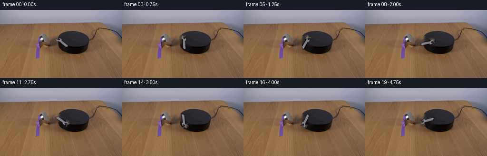
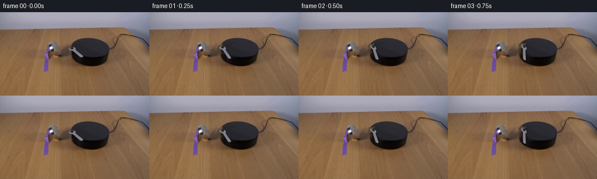

CODING AGENTS AS PIXEL WORLD MODELS
traex/GPT-5.6-Sol · 0101
点击播放 · 原生 RGB 像素
逐轮保存的候选
回放视频、检查图与代码变化。
每份候选均可单独播放。实际图片检查记录在下方工具轨迹中。
候选 01播放与检查图
点击播放 · 原生 RGB 像素


展开代码变化
--- 上一保存版本
+++ 本次保存版本
@@ -0,0 +1,168 @@
+"""Generate the requested fixed-camera scientific demonstration.
+
+The supplied photograph is kept untouched in frame zero. In the continuation the
+small wrench is isolated from the dark platform, the few pixels hidden by it are
+reconstructed, and that original photographic wrench is rotated in the image
+plane. Nothing else in the locked-off shot is moved.
+"""
+from pathlib import Path
+
+import cv2
+import numpy as np
+from PIL import Image
+
+import artifact_io
+
+
+HERE = Path(__file__).resolve().parent
+HEIGHT, WIDTH = 144, 256
+N_FRAMES = 20
+
+
+def largest_component(mask: np.ndarray) -> np.ndarray:
+ """Return the largest 8-connected component of a boolean mask."""
+ count, labels, stats, _ = cv2.connectedComponentsWithStats(
+ mask.astype(np.uint8), connectivity=8
+ )
+ if count <= 1:
+ raise RuntimeError("could not isolate wrench")
+ label = 1 + int(np.argmax(stats[1:, cv2.CC_STAT_AREA]))
+ return labels == label
+
+
+def isolate_wrench(frame: np.ndarray):
+ """Build a clean plate and a premultiplied RGBA layer for the wrench."""
+ # The compact polygon encloses only the wrench and its immediate contact
+ # shadow. Coordinates are measured directly from the supplied RGB pixels.
+ footprint = np.array(
+ [
+ [113, 61], [116, 57], [121, 55], [128, 57], [132, 61],
+ [145, 71], [148, 76], [145, 81], [139, 82], [132, 77],
+ [124, 71], [117, 70], [112, 66],
+ ],
+ dtype=np.int32,
+ )
+ hole = np.zeros((HEIGHT, WIDTH), dtype=np.uint8)
+ cv2.fillPoly(hole, [footprint], 255, lineType=cv2.LINE_AA)
+ # Make the clean plate from the actual local platform illumination. TELEA
+ # continues its smooth, very dark top surface through this tiny occlusion.
+ bgr = cv2.cvtColor(frame, cv2.COLOR_RGB2BGR)
+ plate = cv2.cvtColor(
+ cv2.inpaint(bgr, hole, inpaintRadius=5, flags=cv2.INPAINT_TELEA),
+ cv2.COLOR_BGR2RGB,
+ )
+
+ hsv = cv2.cvtColor(frame, cv2.COLOR_RGB2HSV)
+ yy, xx = np.indices((HEIGHT, WIDTH))
+ in_roi = (xx >= 111) & (xx <= 148) & (yy >= 54) & (yy <= 83)
+ # Metal is neutral gray and considerably brighter than the charcoal plate.
+ core_candidates = (
+ in_roi
+ & (hole > 0)
+ & (hsv[..., 2] > 49)
+ & (hsv[..., 1] < 83)
+ & (frame.max(axis=2) - frame.min(axis=2) < 44)
+ )
+ core = largest_component(core_candidates)
+
+ # Recover antialiased perimeter pixels around the connected metal core.
+ expanded = cv2.dilate(core.astype(np.uint8), np.ones((3, 3), np.uint8), 1) > 0
+ rgb_delta = np.sqrt(
+ np.mean((frame.astype(np.float32) - plate.astype(np.float32)) ** 2, axis=2)
+ )
+ alpha = np.zeros((HEIGHT, WIDTH), np.float32)
+ alpha[core] = 1.0
+ edge = expanded & ~core & (hole > 0)
+ alpha[edge] = np.clip((rgb_delta[edge] - 2.5) / 15.0, 0.0, 0.92)
+ # Exclude tiny, nearly invisible interpolation residues.
+ alpha[alpha < 0.08] = 0.0
+
+ # Convert the already composited boundary pixels back to approximate object
+ # color before later compositing, preventing a dark fringe after rotation.
+ a = alpha[..., None]
+ recovered = frame.astype(np.float32).copy()
+ partial = (alpha > 0.0) & (alpha < 0.999)
+ recovered[partial] = np.clip(
+ (
+ frame[partial].astype(np.float32)
+ - (1.0 - a[partial]) * plate[partial].astype(np.float32)
+ )
+ / np.maximum(a[partial], 0.08),
+ 0,
+ 255,
+ )
+
+ # Work in premultiplied color: transformed edges remain clean and natural.
+ premul = recovered * a
+ return plate, premul.astype(np.float32), alpha
+
+
+def warp_about(layer: np.ndarray, angle_deg: float, center=(130.2, 68.8)):
+ """Rotate an image-sized layer around the wrench's fixed center."""
+ matrix = cv2.getRotationMatrix2D(center, angle_deg, 1.0)
+ return cv2.warpAffine(
+ layer,
+ matrix,
+ (WIDTH, HEIGHT),
+ flags=cv2.INTER_CUBIC,
+ borderMode=cv2.BORDER_CONSTANT,
+ borderValue=0,
+ )
+
+
+def make_frame(
+ plate: np.ndarray,
+ premul: np.ndarray,
+ alpha: np.ndarray,
+ angle_clockwise: float,
+ angular_step: float,
+) -> np.ndarray:
+ """Render one exposure, including restrained rotational motion blur."""
+ base = plate.astype(np.float32)
+ # Five short sub-exposures model a 24% shutter interval. This is enough to
+ # communicate real-time motion at 4 fps without hiding the little wrench.
+ exposure_offsets = np.linspace(-0.12, 0.12, 5) * angular_step
+ samples = []
+ for offset in exposure_offsets:
+ # OpenCV's negative visual angle is clockwise in image coordinates.
+ visual_angle = -(angle_clockwise + float(offset))
+ wa = np.clip(warp_about(alpha, visual_angle), 0.0, 1.0)
+ wp = np.clip(warp_about(premul, visual_angle), 0.0, 255.0)
+
+ # Soft contact shadow follows the wrench, offset down/right on the plate.
+ shadow = cv2.GaussianBlur(wa, (0, 0), sigmaX=1.15, sigmaY=1.15)
+ shift = np.float32([[1, 0, 1.15], [0, 1, 1.55]])
+ shadow = cv2.warpAffine(
+ shadow, shift, (WIDTH, HEIGHT), flags=cv2.INTER_LINEAR,
+ borderMode=cv2.BORDER_CONSTANT, borderValue=0,
+ )
+ shadow_strength = 0.27 * np.clip(shadow, 0.0, 1.0)[..., None]
+ shaded = base * (1.0 - shadow_strength)
+ composite = wp + shaded * (1.0 - wa[..., None])
+ samples.append(composite)
+ return np.clip(np.mean(samples, axis=0) + 0.5, 0, 255).astype(np.uint8)
+
+
+def generate() -> np.ndarray:
+ first = np.asarray(Image.open(HERE / "first_frame.png").convert("RGB"), dtype=np.uint8)
+ if first.shape != (HEIGHT, WIDTH, 3):
+ raise ValueError(f"unexpected first-frame shape: {first.shape}")
+
+ plate, premul, alpha = isolate_wrench(first)
+ frames = np.empty((N_FRAMES, HEIGHT, WIDTH, 3), dtype=np.uint8)
+ frames[0] = first # contract: pixel-identical supplied first frame
+
+ # A little under one full revolution in five seconds reads as a powerful
+ # magnetic demonstration while each 4-fps sample remains interpretable.
+ degrees_per_frame = 16.0
+ for index in range(1, N_FRAMES):
+ frames[index] = make_frame(
+ plate, premul, alpha,
+ angle_clockwise=index * degrees_per_frame,
+ angular_step=degrees_per_frame,
+ )
+ return frames
+
+
+if __name__ == "__main__":
+ artifact_io.save(generate(), HERE)
可观测工具轨迹
实际执行的命令与返回图片。
命令 1exit 0
/bin/bash -lc "cat GENERATION_RULES.md && printf '\\n--- PROMPT ---\\n' && cat prompt.txt"
命令 2exit 1
/bin/bash -lc "find . -maxdepth 2 -type f -printf '%p\\n' | sort && printf '\\n--- TOOLS ---\\n' && command -v ffmpeg && command -v python3"
命令 3exit 0
/bin/bash -lc "python3 - <<'PY'
from PIL import Image
im=Image.open('first_frame.png')
print(im.mode, im.size)
print('extrema', im.getextrema())
PY"命令 4exit 0
/bin/bash -lc "python3 - <<'PY'
try:
import cv2; print('cv2',cv2.__version__)
except Exception as e: print('no cv2',e)
from PIL import Image
import numpy as np
im=np.array(Image.open('first_frame.png'))
# Grid summaries in HSV-ish: mean RGB and luma by 16x12 tiles
for y in range(0,144,12):
row=[]
for x in range(0,256,16):
a=im[y:y+12,x:x+16].mean((0,1)); l=a@[.2126,.7152,.0722]
# compact dominant color code + luminance
dom='K' if l<35 else ('W' if l>210 and a.max()-a.min()<25 else 'R' if a[0]>a[1]*1.3 else 'B' if a[2]>a[0]*1.3 else 'G' if a[1]>a[0]*1.3 else 'N')
row.append(f'{dom}{int(l):03d}')
print(f'{y:03d}:',' '.join(row))
# Edges projection
import cv2
g=cv2.cvtColor(im,cv2.COLOR_RGB2GRAY)
e=cv2.Canny(g,60,140)
print('edge rows', sorted(enumerate(e.sum(1)//255), key=lambda z:z[1], reverse=True)[:20])
print('edge cols', sorted(enumerate(e.sum(0)//255), key=lambda z:z[1], reverse=True)[:20])
PY"命令 5exit 0
/bin/bash -lc "python3 - <<'PY'
import cv2, numpy as np
from PIL import Image
im=np.array(Image.open('first_frame.png')); g=cv2.cvtColor(im,cv2.COLOR_RGB2GRAY)
for th1,th2 in [(30,80),(60,140),(100,200)]:
e=cv2.Canny(g,th1,th2)
e=cv2.dilate(e,np.ones((3,3),np.uint8),iterations=1)
n,lab,st,cen=cv2.connectedComponentsWithStats(e)
print('\\nTH',th1,th2)
for x,y,w,h,a in sorted(st[1:].tolist(),key=lambda z:-z[4])[:25]:
print('box',x,y,w,h,'area',a)
# ASCII canny full crop x50-210 y32-105 at scale2
E=cv2.Canny(g,40,110)
for y in range(30,105,2):
s=''
for x in range(40,220,2):
v=E[y:y+2,x:x+2].max()
s += '#' if v else ' '
print(f'{y:03d}|{s}|')
PY"命令 6exit 0
/bin/bash -lc "python3 - <<'PY'
import cv2,numpy as np
from PIL import Image
im=np.array(Image.open('first_frame.png'))
hsv=cv2.cvtColor(im,cv2.COLOR_RGB2HSV)
# each 2x2 median classify: black @, dark k; red R; blue B; low sat grayscale by brightness
for y in range(34,112,2):
s=''
for x in range(55,155,2):
p=np.median(im[y:y+2,x:x+2],axis=(0,1)); h,sat,v=np.median(hsv[y:y+2,x:x+2],axis=(0,1))
if v<20:c='@'
elif v<35:c='K'
elif v<55:c='k'
elif sat<22 and v>185:c='W'
elif sat<25 and v>130:c='l'
elif sat<30:c='g'
elif (h<15 or h>170) and sat>80:c='R'
elif h<18 and sat>40:c='r'
elif h<35 and sat>50:c='o'
elif h>90 and h<140 and sat>40:c='B'
elif v>180:c='+'
elif v>120:c='-'
else:c='.'
s+=c
print(f'{y:03d}|{s}|')
PY"命令 7exit 0
/bin/bash -lc "python3 - <<'PY'
import cv2,numpy as np
from PIL import Image
im=np.array(Image.open('first_frame.png')); hsv=cv2.cvtColor(im,cv2.COLOR_RGB2HSV)
# x 110-256, y32-100, 2pix, classify robustly
for y in range(32,102,2):
s=''
for x in range(108,256,2):
p=np.mean(im[y:y+2,x:x+2],axis=(0,1)); h,sat,v=np.mean(hsv[y:y+2,x:x+2],axis=(0,1))
if v<18:c='@'
elif v<32:c='K'
elif v<48:c='k'
elif sat<25 and v>180:c='W'
elif sat<35 and v>120:c='l'
elif sat<40:c='g'
elif (h<15 or h>170) and sat>90:c='R'
elif h<20 and sat>45:c='r'
elif h<40 and sat>50:c='o'
elif 85<h<145 and sat>45:c='B'
elif v>180:c='+'
elif v>120:c='-'
else:c='.'
s+=c
print(f'{y:03d}|{s}|')
PY"命令 8exit 0
/bin/bash -lc "python3 - <<'PY'
import cv2,numpy as np
from PIL import Image
im=np.array(Image.open('first_frame.png')); lab=cv2.cvtColor(im,cv2.COLOR_RGB2LAB); hsv=cv2.cvtColor(im,cv2.COLOR_RGB2HSV)
for name,(x1,y1,x2,y2) in {'left':(60,35,120,110),'center':(110,35,225,105),'right':(220,30,256,105),'all':(0,0,256,144)}.items():
a=im[y1:y2,x1:x2]; h=hsv[y1:y2,x1:x2]
print(name,'rgb mean',a.mean((0,1)), 'range',a.reshape(-1,3).min(0),a.reshape(-1,3).max(0),'sat pct',np.percentile(h[:,:,1],[0,5,25,50,75,95,100]),'val',np.percentile(h[:,:,2],[0,5,25,50,75,95,100]))
# kmeans RGB/LAB all and center
for name,(x1,y1,x2,y2) in {'all':(0,0,256,144),'center':(110,35,225,105)}.items():
a=lab[y1:y2,x1:x2].reshape(-1,3).astype(np.float32)
k=10; _,labels,c=cv2.kmeans(a,k,None,(cv2.TERM_CRITERIA_EPS+cv2.TERM_CRITERIA_MAX_ITER,100,.1),10,cv2.KMEANS_PP_CENTERS)
rgb=cv2.cvtColor(c.reshape(1,k,3).astype(np.uint8),cv2.COLOR_LAB2RGB).reshape(k,3)
cnt=np.bincount(labels.ravel())
print('\\n',name)
for i in np.argsort(-cnt): print(i,cnt[i],rgb[i],c[i])
# low sat candidate boxes center at sat relative and val
for condname,mask in [
('sat<30 val>90',(hsv[:,:,1]<30)&(hsv[:,:,2]>90)),
('sat<45 val>100',(hsv[:,:,1]<45)&(hsv[:,:,2]>100)),
('graydiff<20 val>80',((im.max(2)-im.min(2))<20)&(im.max(2)>80)),
('bright center',(hsv[:,:,2]>120)&(np.indices(hsv.shape[:2])[1]>110)&(np.indices(hsv.shape[:2])[1]<225)&(np.indices(hsv.shape[:2])[0]>35)&(np.indices(hsv.shape[:2])[0]<100))]:
m=mask.astype(np.uint8)*255
n,l,st,cen=cv2.connectedComponentsWithStats(m)
print('\\n',condname,'total',mask.sum())
for x,y,w,hh,aa in sorted(st[1:].tolist(),key=lambda z:-z[4])[:15]: print(x,y,w,hh,aa)
PY"命令 9exit 0
/bin/bash -lc "python3 - <<'PY'
import cv2,numpy as np
from PIL import Image
im=np.array(Image.open('first_frame.png')); hsv=cv2.cvtColor(im,cv2.COLOR_RGB2HSV)
# render ROI at pixel resolution with bin by luminance and saturation, x labels
x1,x2,y1,y2=108,153,48,88
chars=' .,:;irsXA253hMHGS#9B&@'
print('LUMINANCE')
for y in range(y1,y2):
line=''
for x in range(x1,x2):
l=int(im[y,x]@[.2126,.7152,.0722]); line+=chars[min(len(chars)-1,l*(len(chars)-1)//256)]
print(f'{y:03d}|{line}|')
print('SAT / neutral N')
for y in range(y1,y2):
line=''
for x in range(x1,x2):
h,s,v=hsv[y,x]
if v<25:c='@'
elif s<20:c='N'
elif s<40:c='n'
elif s<70:c='.'
elif s<110:c='r'
elif s<150:c='R'
else:c='"'!'"'
line+=c
print(f'{y:03d}|{line}|')
print('RGB tuples candidate bounds')
for y in range(56,81,2):
print(y,[tuple(im[y,x]) for x in range(116,145,2)])
PY"命令 10exit 0
/bin/bash -lc "python3 - <<'PY'
from PIL import Image
import numpy as np, cv2
im=np.array(Image.open('first_frame.png')); hsv=cv2.cvtColor(im,cv2.COLOR_RGB2HSV)
for y in range(50,90):
inds=[]
for x in range(105,170):
r,g,b=map(int,im[y,x]); mx=max(r,g,b); mn=min(r,g,b)
# metal: neutral/bluish and brighter than black platform
if mx>58 and (mx-mn)<28 and b>=r-4: inds.append(x)
# runs
runs=[]
for x in inds:
if not runs or x>runs[-1][-1]+1:runs.append([x])
else:runs[-1].append(x)
if runs: print(y,[(z[0],z[-1]) for z in runs])
print('exact ROI with coords mask')
for y in range(55,85):
s=''
for x in range(110,155):
r,g,b=map(int,im[y,x]); mx=max(r,g,b); mn=min(r,g,b)
if mx>110 and mx-mn<28 and b>=r-4:c='#'
elif mx>60 and mx-mn<28 and b>=r-4:c='+'
elif mx<25:c='@'
elif mx<58:c='.'
else:c=' '
s+=c
print(f'{y:02d} {s}')
print(' '+''.join(str(x//10%10) for x in range(110,155)))
print(' '+''.join(str(x%10) for x in range(110,155)))
PY"命令 11exit 0
/bin/bash -lc 'cat artifact_io.py'
命令 12exit 0
/bin/bash -lc "python3 - <<'PY'
import cv2,numpy as np
from PIL import Image
im=np.array(Image.open('first_frame.png')); hsv=cv2.cvtColor(im,cv2.COLOR_RGB2HSV)
roi=(slice(55,83),slice(112,148))
for smax,vmin in [(60,55),(65,50),(80,50),(50,50),(80,65)]:
m=((hsv[:,:,1]<smax)&(hsv[:,:,2]>vmin)).astype('uint8')
q=np.zeros_like(m);q[roi]=m[roi]
n,l,st,c=cv2.connectedComponentsWithStats(q,8)
print(smax,vmin,sorted(st[1:].tolist(),key=lambda z:-z[4])[:10])
PY"命令 13exit 0
/bin/bash -lc "cat > .tmp/extract_test.py <<'PY'
import cv2, numpy as np
from PIL import Image
im=np.array(Image.open('first_frame.png'))
h,w=im.shape[:2]
poly=np.array([[114,58],[119,56],[129,58],[146,71],[147,78],[142,82],[134,81],[124,73],[116,69],[113,64]],np.int32)
region=np.zeros((h,w),np.uint8);cv2.fillPoly(region,[poly],255)
bg=cv2.inpaint(cv2.cvtColor(im,cv2.COLOR_RGB2BGR),region,5,cv2.INPAINT_TELEA)
bg=cv2.cvtColor(bg,cv2.COLOR_BGR2RGB)
d=np.sqrt(np.mean((im.astype(float)-bg.astype(float))**2,2))
vals=d[region>0]
print('diff pct',np.percentile(vals,[0,10,25,50,60,70,75,80,85,90,95,99,100]))
for th in [3,5,7,9,12,16,20,30]:
m=((d>th)&(region>0)).astype(np.uint8)
n,l,st,c=cv2.connectedComponentsWithStats(m,8)
comps=sorted(st[1:].tolist(),key=lambda z:-z[4])[:10]
print(th, m.sum(), comps)
# ASCII diff
chars=' .:-=+*#%@'
for y in range(54,85):
s=''
for x in range(110,151):
if not region[y,x]: s+=' '
else:s+=chars[min(9,int(d[y,x]/8))]
print(f'{y:02d}|{s}|')
PY
python3 .tmp/extract_test.py"命令 14exit 0
/bin/bash -lc "python3 - <<'PY'
exec(open('.tmp/extract_test.py').read().split(\"d=np.sqrt\")[0])
# compare telea/ns row luma in region
reg=region
for mode in [cv2.INPAINT_TELEA,cv2.INPAINT_NS]:
b=cv2.cvtColor(cv2.inpaint(cv2.cvtColor(im,cv2.COLOR_RGB2BGR),reg,5,mode),cv2.COLOR_BGR2RGB)
print('mode',mode)
chars=' .,:;irsXA253hMHGS#9B&@'
for y in range(56,81,2):
ss=''
for x in range(110,150):
l=int(b[y,x]@[.2126,.7152,.0722]);ss+=chars[min(len(chars)-1,l*(len(chars)-1)//256)]
print(y,ss)
PY"命令 15exit 0
/bin/bash -lc "python3 - <<'PY'
exec(open('.tmp/extract_test.py').read().split(\"# ASCII diff\")[0])
for th in [9,16,25]:
print('TH',th)
for y in range(55,82):
s=''
for x in range(112,149): s += '#' if region[y,x] and d[y,x]>th else ' '
print(f'{y:02d}|{s}|')
PY"命令 16exit 0
/bin/bash -lc "python3 - <<'PY'
from PIL import Image
import numpy as np
im=np.array(Image.open('first_frame.png'))
ch=' .,:;irsXA253hMHGS#9B&@'
# Print luma 2 chars each pixel x90-170 row40-100 every row
for y in range(42,96):
s=''
for x in range(90,171):
l=int(im[y,x]@[.2126,.7152,.0722]);s+=ch[min(len(ch)-1,l*(len(ch)-1)//256)]
print(f'{y:03d}|{s}|')
PY"命令 17exit 0
/bin/bash -lc "cat > generate.py <<'PY'
\"\"\"Generate the requested fixed-camera scientific demonstration.
The supplied photograph is kept untouched in frame zero. In the continuation the
small wrench is isolated from the dark platform, the few pixels hidden by it are
reconstructed, and that original photographic wrench is rotated in the image
plane. Nothing else in the locked-off shot is moved.
\"\"\"
from pathlib import Path
import cv2
import numpy as np
from PIL import Image
import artifact_io
HERE = Path(__file__).resolve().parent
HEIGHT, WIDTH = 144, 256
N_FRAMES = 20
def largest_component(mask: np.ndarray) -> np.ndarray:
\"\"\"Return the largest 8-connected component of a boolean mask.\"\"\"
count, labels, stats, _ = cv2.connectedComponentsWithStats(
mask.astype(np.uint8), connectivity=8
)
if count <= 1:
raise RuntimeError(\"could not isolate wrench\")
label = 1 + int(np.argmax(stats[1:, cv2.CC_STAT_AREA]))
return labels == label
def isolate_wrench(frame: np.ndarray):
\"\"\"Build a clean plate and a premultiplied RGBA layer for the wrench.\"\"\"
# The compact polygon encloses only the wrench and its immediate contact
# shadow. Coordinates are measured directly from the supplied RGB pixels.
footprint = np.array(
[
[113, 61], [116, 57], [121, 55], [128, 57], [132, 61],
[145, 71], [148, 76], [145, 81], [139, 82], [132, 77],
[124, 71], [117, 70], [112, 66],
],
dtype=np.int32,
)
hole = np.zeros((HEIGHT, WIDTH), dtype=np.uint8)
cv2.fillPoly(hole, [footprint], 255, lineType=cv2.LINE_AA)
# Make the clean plate from the actual local platform illumination. TELEA
# continues its smooth, very dark top surface through this tiny occlusion.
bgr = cv2.cvtColor(frame, cv2.COLOR_RGB2BGR)
plate = cv2.cvtColor(
cv2.inpaint(bgr, hole, inpaintRadius=5, flags=cv2.INPAINT_TELEA),
cv2.COLOR_BGR2RGB,
)
hsv = cv2.cvtColor(frame, cv2.COLOR_RGB2HSV)
yy, xx = np.indices((HEIGHT, WIDTH))
in_roi = (xx >= 111) & (xx <= 148) & (yy >= 54) & (yy <= 83)
# Metal is neutral gray and considerably brighter than the charcoal plate.
core_candidates = (
in_roi
& (hole > 0)
& (hsv[..., 2] > 49)
& (hsv[..., 1] < 83)
& (frame.max(axis=2) - frame.min(axis=2) < 44)
)
core = largest_component(core_candidates)
# Recover antialiased perimeter pixels around the connected metal core.
expanded = cv2.dilate(core.astype(np.uint8), np.ones((3, 3), np.uint8), 1) > 0
rgb_delta = np.sqrt(
np.mean((frame.astype(np.float32) - plate.astype(np.float32)) ** 2, axis=2)
)
alpha = np.zeros((HEIGHT, WIDTH), np.float32)
alpha[core] = 1.0
edge = expanded & ~core & (hole > 0)
alpha[edge] = np.clip((rgb_delta[edge] - 2.5) / 15.0, 0.0, 0.92)
# Exclude tiny, nearly invisible interpolation residues.
alpha[alpha < 0.08] = 0.0
# Convert the already composited boundary pixels back to approximate object
# color before later compositing, preventing a dark fringe after rotation.
a = alpha[..., None]
recovered = frame.astype(np.float32).copy()
partial = (alpha > 0.0) & (alpha < 0.999)
recovered[partial] = np.clip(
(
frame[partial].astype(np.float32)
- (1.0 - a[partial]) * plate[partial].astype(np.float32)
)
/ np.maximum(a[partial], 0.08),
0,
255,
)
# Work in premultiplied color: transformed edges remain clean and natural.
premul = recovered * a
return plate, premul.astype(np.float32), alpha
def warp_about(layer: np.ndarray, angle_deg: float, center=(130.2, 68.8)):
\"\"\"Rotate an image-sized layer around the wrench's fixed center.\"\"\"
matrix = cv2.getRotationMatrix2D(center, angle_deg, 1.0)
return cv2.warpAffine(
layer,
matrix,
(WIDTH, HEIGHT),
flags=cv2.INTER_CUBIC,
borderMode=cv2.BORDER_CONSTANT,
borderValue=0,
)
def make_frame(
plate: np.ndarray,
premul: np.ndarray,
alpha: np.ndarray,
angle_clockwise: float,
angular_step: float,
) -> np.ndarray:
\"\"\"Render one exposure, including restrained rotational motion blur.\"\"\"
base = plate.astype(np.float32)
# Five short sub-exposures model a 24% shutter interval. This is enough to
# communicate real-time motion at 4 fps without hiding the little wrench.
exposure_offsets = np.linspace(-0.12, 0.12, 5) * angular_step
samples = []
for offset in exposure_offsets:
# OpenCV's negative visual angle is clockwise in image coordinates.
visual_angle = -(angle_clockwise + float(offset))
wa = np.clip(warp_about(alpha, visual_angle), 0.0, 1.0)
wp = np.clip(warp_about(premul, visual_angle), 0.0, 255.0)
# Soft contact shadow follows the wrench, offset down/right on the plate.
shadow = cv2.GaussianBlur(wa, (0, 0), sigmaX=1.15, sigmaY=1.15)
shift = np.float32([[1, 0, 1.15], [0, 1, 1.55]])
shadow = cv2.warpAffine(
shadow, shift, (WIDTH, HEIGHT), flags=cv2.INTER_LINEAR,
borderMode=cv2.BORDER_CONSTANT, borderValue=0,
)
shadow_strength = 0.27 * np.clip(shadow, 0.0, 1.0)[..., None]
shaded = base * (1.0 - shadow_strength)
composite = wp + shaded * (1.0 - wa[..., None])
samples.append(composite)
return np.clip(np.mean(samples, axis=0) + 0.5, 0, 255).astype(np.uint8)
def generate() -> np.ndarray:
first = np.asarray(Image.open(HERE / \"first_frame.png\").convert(\"RGB\"), dtype=np.uint8)
if first.shape "'!= (HEIGHT, WIDTH, 3):
raise ValueError(f"unexpected first-frame shape: {first.shape}")
plate, premul, alpha = isolate_wrench(first)
frames = np.empty((N_FRAMES, HEIGHT, WIDTH, 3), dtype=np.uint8)
frames[0] = first # contract: pixel-identical supplied first frame
# A little under one full revolution in five seconds reads as a powerful
# magnetic demonstration while each 4-fps sample remains interpretable.
degrees_per_frame = 16.0
for index in range(1, N_FRAMES):
frames[index] = make_frame(
plate, premul, alpha,
angle_clockwise=index * degrees_per_frame,
angular_step=degrees_per_frame,
)
return frames
if __name__ == "__main__":
artifact_io.save(generate(), HERE)
PY
python3 generate.py
python3 - <<'"'PY'
from pathlib import Path
import numpy as np
from PIL import Image
z=np.load('pixels.npz')['pixels']
frames=np.stack([np.array(Image.open(f'frames/{i:02d}.png')) for i in range(20)])
first=np.array(Image.open('first_frame.png'))
print('frames',frames.shape,frames.dtype)
print('frame00 exact',np.array_equal(frames[0],first),'maxerr',np.abs(frames[0].astype(int)-first).max())
for i in range(1,20):
d=np.any(frames[i]"'!=frames[i-1],2)
ys,xs=np.where(d)
print(f'"'{i:02d}: changed={d.sum():4d} bbox=({xs.min()},{ys.min()})-({xs.max()},{ys.max()}) mean_abs={np.abs(frames[i].astype(int)-frames[i-1].astype(int)).mean():.4f}')
print('files',[(p.name,p.stat().st_size) for p in map(Path,['pixels.npz','index.html','inspection.png','transition_check.png'])])
PY"命令 18exit 0
/bin/bash -lc "python3 - <<'PY'
import generate
from PIL import Image
import numpy as np, cv2
im=np.array(Image.open('first_frame.png'))
plate,p,a=generate.isolate_wrench(im)
ys,xs=np.where(a>.05)
print('alpha area,sum,bbox',len(xs),a.sum(),(xs.min(),ys.min(),xs.max(),ys.max()))
print('core area',np.count_nonzero(a>.99),'partial',np.count_nonzero((a>0)&(a<.99)))
print('object colors percentiles',np.percentile((p.sum(2)/np.maximum(a,1e-3))[a>.5],[0,5,25,50,75,95,100]))
# motion orientation from pixels appreciably unlike plate, rough PCA
fs=generate.generate()
for i in [0,1,2,3,4,5,8,11,14,17,19]:
d=np.sqrt(np.mean((fs[i].astype(float)-plate.astype(float))**2,2))
yy,xx=np.where(d>12)
ww=d[yy,xx]; X=np.c_[xx,yy]; mu=np.average(X,0,weights=ww); C=((X-mu)*ww[:,None]).T@(X-mu)/ww.sum()
val,vec=np.linalg.eigh(C); v=vec[:,np.argmax(val)]; ang=np.degrees(np.arctan2(v[1],v[0]))%180
print(i,'n',len(xx),'cent',np.round(mu,2),'axis',round(ang,1),'eval',np.round(val,1))
# ASCII luma crops keyframes
ch=' .,:;irsXA253hMHGS#9B&@'
for fi in [0,1,5,10,15,19]:
print('\\nFRAME',fi)
for y in range(50,92,2):
s=''
for x in range(105,158,2):
l=int(fs[fi,y:y+2,x:x+2].mean((0,1))@[.2126,.7152,.0722]);s+=ch[min(len(ch)-1,l*(len(ch)-1)//256)]
print(s)
PY"命令 19exit 0
/bin/bash -lc "python3 -m py_compile generate.py && sha256sum pixels.npz frames/00.png frames/19.png > .tmp/hashes_before.txt && python3 generate.py && sha256sum -c <(sed 's# # #' .tmp/hashes_before.txt) && python3 - <<'PY'
import numpy as np
from PIL import Image
f=np.stack([np.asarray(Image.open(f'frames/{i:02d}.png').convert('RGB')) for i in range(20)])
src=np.asarray(Image.open('first_frame.png').convert('RGB'))
assert f.shape==(20,144,256,3)
assert f.dtype==np.uint8
assert np.array_equal(f[0],src)
assert all(np.any(f[i]"'!=f[i-1]) for i in range(1,20))
print('"'PASS: 20 uint8 RGB frames, 256x144, exact source frame 00, non-static continuation')
PY"保存候选 1 份；完成命令 19 次；可验证图片返回 0 张。原始 API 响应与完整日志保留在本地。